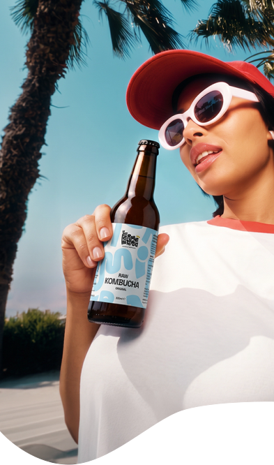
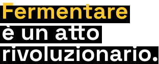
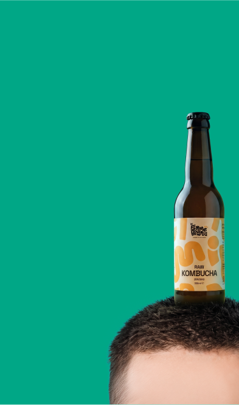
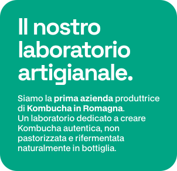
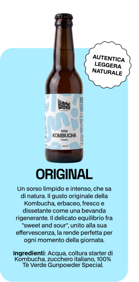
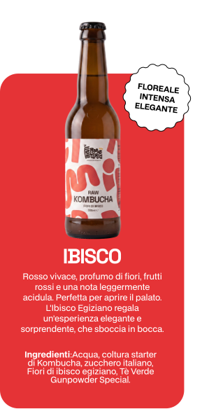
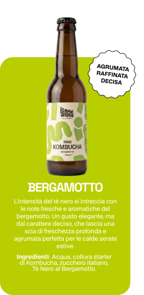
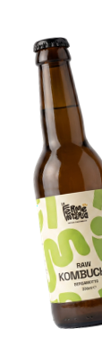

Le nostre creazioni.
Autentiche, non pastorizzate, vive.





Una festa
di batteri
buoni!
Immagina la fermentazione come
una festa dove batteri buoni, lieviti
e microrganismi selvaggi si danno
il cinque per trasformare ingredienti
semplici in opere d'arte gustative!
Questo processo magico, oltre a
creare sapori unici e irresistibili, porta
anche una miriade di benefici per il
nostro corpo e la nostra salute.
I prodotti fermentati sono come dei supereroi per la salute: ricchi di probiotici, enzimi e antiossidanti, sono un toccasana per il tuo sistema digestivo.
Fanno festa con il tuo palato, rinforzano in modo naturale il sistema immunitario e migliorano persino l'umore.